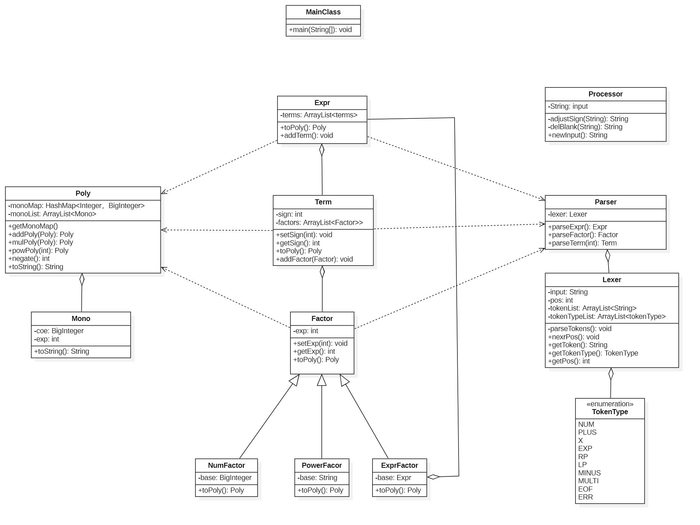
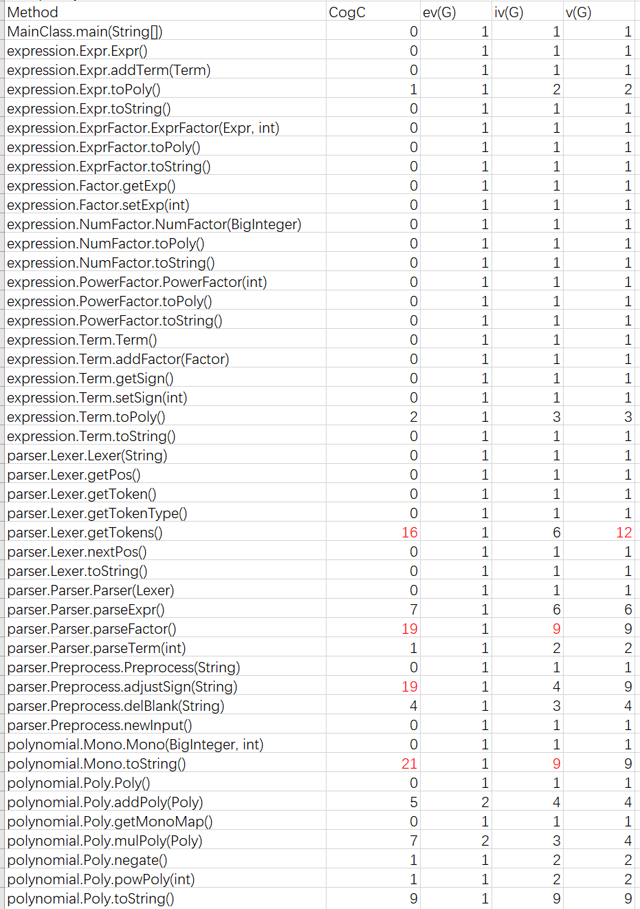
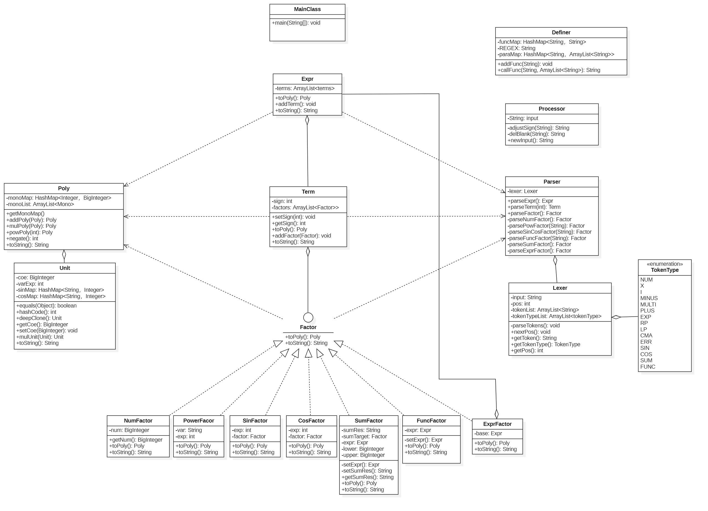
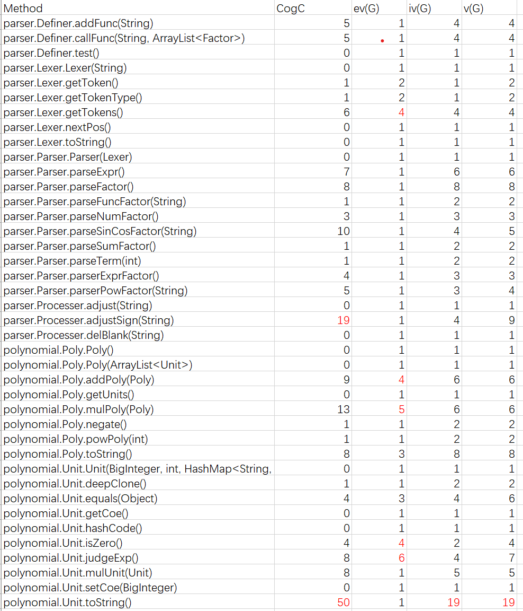
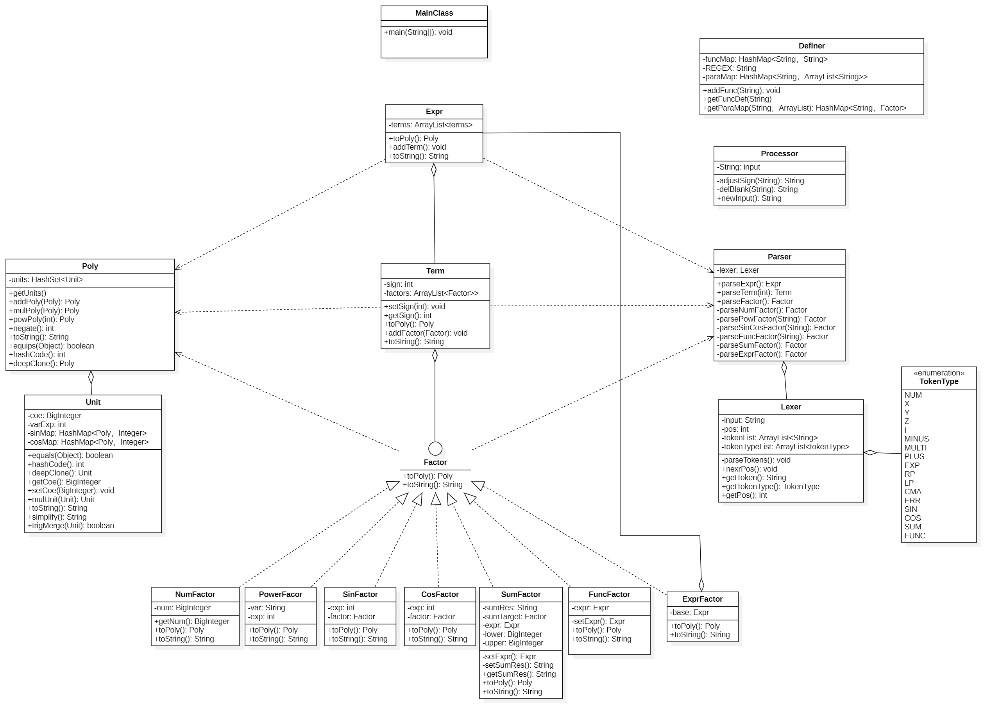
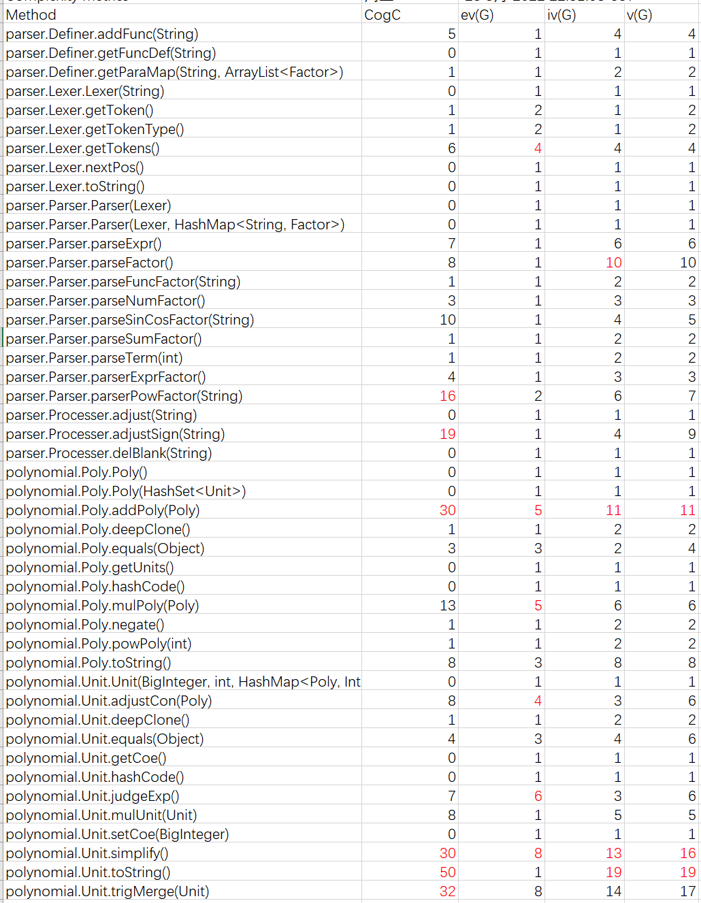
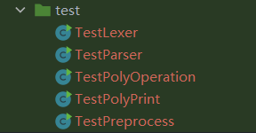
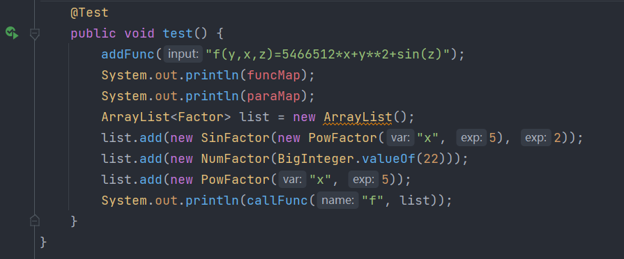

前言
第一单元的主题是表达式括号展开，主要的学习目标是熟悉面向对象的思想，学会使用类来管理对象，掌握一定的模块化设计能力。本单元一共有三次作业——单变量多项式展开，含有三角函数、求和函数和自定义函数的多项式展开，含有多层嵌套的表达式展开。
可以看出，这三次作业的要求是一步步递进的，代码的复杂度也同样大大递增。就好像是一个喋喋不休的甲方每周都会定时给你提一堆“变态”的要求，而你又无法拒绝……不过好在经过一个月的挣扎，第一单元终于落下了帷幕，借着这篇博客，我将对三次作业的代码进行详细分析，并对本人的学习心得和体会进行总结。
第一次作业分析
第一次作业主要是关于单变量多项式的展开，这次我们需要展开的表达式中项只有三种——幂函数，常数因子和表达式因子。
代码UML类图
本次作业代码的UML类图如下所示

代码架构分析
简单分析本次作业的要求后我们不难发现，我们表达式主要包含三部分——Expr，Term，Factor，而Factor又有三种——幂函数，常数因子和表达式因子，基于面向对象的思想，我们要对这些类型分别建类。其中Expr类中使用ArrayList来容纳该表达式中含有的Term，Term类中使用ArrayList来容纳该项中含有的Factor。
建类仅仅是第一步，此外我们还面临两个问题——
- 如何将表达式、项和因子解析出来？
- 如何将表达式进行展开?
表达式解析：递归下降算法
第一个问题主要有两种解决方式——一个是使用正则表达式进行字符串的解构，另一个是往届学长大力推荐的递归下降算法。曾有学长说——“使用正则表达式后给后面的作业带来意想不到的bug”，于是我就果断选择了后者。
递归下降算法听上去高深莫测，但是在课程组开放的训练题中一番接触后，感觉其实也不是很复杂。它主要包含了两个部分——Lexer（词法分析器）和Paser（解析器）。
Lexer主要是将表达式分解成一系列基本语法单元，而Parser主要是根据表达式的形式化定义，依靠Lexer分解出的语法单元(token)，递归的生成表达式、项和因子。
Lexer
在本次作业中，表达式的基本语法单元的类型有 NUM, X, MULTI, MINUS, EXP, PLUS, LP, RP，我们将这些语法单元的类型用TokenType这一枚举类型来记录。
public enum TokenType {
NUM, X,
MULTI, MINUS, EXP, PLUS,
LP, RP, //左括号和右括号
}因为本作业语法单元比较简单，我们可以 直接用for循环来遍历字符串， 然后用switch-case来对语法单元进行分析，将分析出来的语法单元及其类型分别放入Lexer类中的tokenList和tokenTypeList——
switch (c) {
case '+':
tokenList.add("+");
tokenTypeList.add(TokenType.PLUS);
break;
case '-':
//...
case '*':
//...
case '(':
//...
case ')':
//...
case 'x':
//...
}这样我们就把表达式中所有语法单元都解析出来了，下面就该到Parser发挥作用了
Parser
Parser类的设计主要是沿用了本单元练习题中的写法，将表达式的解析分成了三部分——parseExpr, parseTerm, parseFactor，每一部分的解析都遵循形式化文法。
以parseExpr为例，因为第一项之前可能带有符号，于是我们就先将符号（+或者-）解析出来，然后解析第1项。解析完第1项后，我们就可以直接使用while循环对后面的项依次进行解析。需要注意的是，解析项实际上就调用一次parseFactor()方法.代码如下——
public Expr parseExpr() {
Expr expr = new Expr();
// get the first term
int sign = 1;
if (lexer.getTokenType() == TokenType.MINUS) {
sign = -1;
lexer.nextPos();
} else if (lexer.getTokenType() == TokenType.PLUS) {
lexer.nextPos();
}
expr.addTerm(parseTerm(sign));
// get the terms left;
while (lexer.getTokenType() == TokenType.MINUS || lexer.getTokenType() == TokenType.PLUS) {
if (lexer.getTokenType() == TokenType.PLUS) {
lexer.nextPos();
expr.addTerm(parseTerm(1));
} else {
lexer.nextPos();
expr.addTerm(parseTerm(-1));
}
}
return expr;
}
public Term parseTerm(int sign) {...}
public Factor parseFactor() {...}
表达式展开
经过分析，本次作业中表达式展开的最终结果其实是一个多项式的形式——
$$Expr = \sum a_ix^{n_i}$$
可以发现，多项式中含有一系列的单项式，每个单项式都是$ax^n$这种形式。于是我们不难想到，我们可以再建立两个类——Poly（多项式类）和Mono（单项式类）。
-
Mono类含有两个成员变量——coe和exp，分别代表系数和x的指数。然后还有toString()方法，将Mono转化成 “coe*x**exp” 这种形式//Mono.java private BigInteger coe; private int exp; //... public String toStirng() {...} -
Poly类有一个ArrayList容器，用来容纳一系列Mono，此外还有addPoly()，mulPoly()和powPoly()等方法来实现多项式的运算,最后有toString()方法将每个Mono的字符串形式链接起来，形成表达式字符串//Poly.java private ArrayList<Mono> monoList; //..... public Poly addPoly(Poly other) {...} public Poly mulPoly(Poly other) {...} public Poly powPoly(Poly other) {...} public String toStirng() {...}
这样之后，我们就可以在Expr、Term、Factor等类中都写一个toPoly()方法，将类中的内容转化为多项式。然后从factor.toPoly()一步步向上转化，那么最终可以通过expr.toPoly()来获得结果。具体的转化过程如下——
-
numFactor(数字因子)和powerFactor（幂函数因子）的toPoly方法很简单，直接转化为 只含有一个Mono的Poly即可。例如，因子5可以转化为一个只含有单项式5*x**0的多项式，因子x**2一个只含有单项式1*x**2的多项式。 -
Term类的toPoly()方法是：将该类中含有的所有Factor的Poly形式（即toPoly()的结果）用mulPoly()方法乘起来。//Term.java public Poly toPoly() { //.... for (Factor it : factors) { Poly temp = poly.mulPoly(it.toPoly()); poly = temp; } if (sign == -1) { poly.negate(); } return poly; }注意一个细节，因为项是有符号的，如果该项整体是负的，我们需要把
Poly中所有的单项式的系数取反，这个取反操作我们是通过Poly类中定义的negate()方法实现的。 -
Expr类的toPoly()方法是：将其含有的所有Term的Poly形式（即toPoly()的结果）用addPoly()方法加起来。//Expr.java public Poly toPoly() { Poly poly = new Poly(); for (Term it : terms) { Poly temp = poly.addPoly(it.toPoly()); poly = temp; } return poly; } -
对于
exprFactor，因为其包含一个Expr类型的“底”和一个int类型的指数，我们可以通过expr.toPoly()得到 ”底”的多项式形式，然后使用powPoly()方法展开。//exprFactor.java public Poly toPoly() { Poly poly = base.toPoly().powPoly(this.getExp()); return poly; }
这样，我们就可以通过在每个类中定义的toPoly()方法自底向上地得到表达式的多项式形式。最后，我们再通过Poly中的toString()方法就可以获得最终展开后的结果。
其他细节
- 表达式预处理： 我们设置了一个表达式预处理类
Processer，预处理的内容包括——将表达式中空白符删去、将连续的±号合并成一个。 - 关于优化：
- 如果单项式系数为
0，则最终结果为0, - 如果单项式系数为
1，则可以省略系数，简化为$x^n$ - 如果单项式系数为
-1，则可以省略系数，简化为$-x^n$ - 如果单项式x的指数为
0，则最终结果只输出系数 - 如果单项式x的指数为
1，则指数部分可以省略,简化为$ax$ - 如果单项式x的指数为
2,则x**2可以化简为x*x
- 如果单项式系数为
代码复杂度分析
Method Metrics

从代码复杂度分析数据可以看到，大多数方法的复杂度在合理范围之内，而有四个方法复杂度超标.
-
Lexer类中的getTokens()方法使用了switch-case对表达式的语法单元进行解析。由于使用了switch的语法结构，因此结构非常冗杂，导致代码量暴增。
在作业2中，我采用了正则表达式来进行优化 -
再
Parser类中的parseFactor()方法里，我们需要先判断当前解析的因子是什么类型的（数字因子？幂函数因子？表达式因子？）然后再根据因子的类型分别进行解析，这样也导致了代码复杂度较高。在作业2中，我为每一种因子的解析都单独封装了一个方法，然后在
parseFactor()中调用这些方法。这样既可以减少parseFactor()方法的复杂度，也提高了代码可读性。 -
Mono类中toString()方法在生成单项式的字符串形式时，需要针对对每一种特定的情况进行优化，免不了使用大量的if-else语句进行特判，复杂度高也在所难免。
第二次作业分析
第二次作业在第一次的基础上增加了三角函数因子，求和函数因子和自定义函数因子，复杂度进一步提高。
代码UML类图
本次作业代码的UML类图如下所示

代码架构分析
第一次作业到第二次作业的跨度比较大，但是递归下降方法可以继续沿用，只需要增加几种语法单元即可（包括SIN,COS,FUNC,SUM,CMA[逗号]）。本次作业的困难之处主要有以下几点——
- 三角函数如何解析？
- 如何解析求和函数
sum(i, 求和下界, 求和上界, 求和表达式)？如何将i的值带入到求和因子factor中？ - 如何解析自定义函数
[fgh](x,y,z)? 如何将实参带入到函数定义式中? - 在本次作业我们不能使用$ax^n$作为多项式
Poly的最小组成单元，那么我们该用什么?
三角函数的解析
首先我们可以新建了一个sinFactor类和cosFactor类（其实也可以合并成一个类），类中有两个成员变量——factor(表示三角函数括号内的因子)，exp(表示三角函数的指数部分)
//sinFactor.java
private Factor factor; //三角函数括号内的因子
private int exp; //三角函数的指数部分为解析三角函数，我们在parser类中设置了一个parserSinCosFactor()方法，该方法在parseFactor()中被调用。解析逻辑是，当我们在parseFactor()中发现当前解析的因子为sin或者cos时，我们就可以调用parserSinCosFactor()方法，先将三角函数括号内的因子进行解析（即在该方法中再调用parseFactor()方法），然后解析该三角函数的指数，最后将解析结果保存到一个SinFactor对象或者CosFactor对象中返回即可。
//Paser.java
private Factor parseSinCosFactor(String type) {
//......
Factor inside = parseFactor();
//.......
int exp = 1;
if (lexer.getTokenType() == TokenType.EXP) {
exp = ..... //如果有指数的话则更新exp，否则exp = 1
}
//.....
if (type.equals("sin")) {
return new sinFactor(inside, exp);
} else {
return new cosFactor(inside, exp);
}
}求和函数的解析
首先，我新建了一个SumFactor类，成员变量有——upper,lower,sumTarget,sumRes,expr，用于封装求和函数对象
//SumFactor.java
private BigInteger upper; //求和上界
private BigInteger lower; //求和下界
private Factor sumTarget; //求和目标，即需要求和的因子
private String sumRes; //根据求和初步展开的表达式
private Expr expr; //将sumRes解析出来的表达式为解析求和函数，我们在parser类中设置了一个parserSumFactor()方法，解析逻辑是，先将求和函数的上界和下界解析出来，然后解析最后的求和因子（同样是调用parseFactor()方法），最后将解析结果保存到一个SumFactor对象中返回。
//Paser.java
private Factor parseSumFactor(String type) {
//...
NumFactor upper = (NumFactor) parseFactor();
lexer.nextPos(); //skip ','
NumFactor lower = (NumFactor) parseFactor();
lexer.nextPos(); //skip ','
Factor sumTarget = parseFactor();
lexer.nextPos(); //skip ')'
return new SumFactor(upper, lower, sumTarget);
}“将结果保存到一个SumFactor对象”实际上是调用了一个该类的构造函数，在这个构造函数中我们还做了进一步处理——
//SumFactor.java
public SumFactor(NumFactor lower, NumFactor upper, Factor sumTarget) {
this.upper = upper.getNum();
this.lower = lower.getNum();
this.sumTarget = sumTarget;
this.sumRes = setSumRes();
this.expr = setExpr();
}这里我们调用了两个函数——setSumRes()和setExpr()，这两个函数都是定义在该文件中的private方法
setSumRes()方法主要是根据lower和upper将求和函数展开成字符串，主要采用的是字符串替换的方法——使用for循环让i从lower遍历到upper，然后将i的值代入的求和目标sumTarget的字符串形式这时你可能会疑惑，求和目标
sumTarget是Factor类型，怎么获得字符串形式呢???
实际上，在这次作业中我给每一个数据类都重写了toString()方法，非递归的Factor类型(如数字因子，幂函数因子)可以直接变为字符串形式，Term的toString()是将其含有的所有Factor的字符串形式用"*“连接起来，而Expr的toString()是将其含有的所有Term的字符串形式用”+"连接起来即可。setExpr()实际上将字符串形式的求和结果sumRes使用Lexer和Paser进行解析，然后返回解析出来的Expr对象。
至此，求和函数解析告一段落。
自定义函数的定义和解析
首先，我新建了一个FuncFactor类，成员变量有——newFunc和expr，用于封装自定义函数类型的对象
//FuncFactor.java
private String newFunc; //将函数实参带入形参位置后的结果(字符串形式)
private Expr expr; //将newFunc解析成表达式后的结果为了便于自定义函数的定义和解析，我还新建了一个工具类Definer,主要处理自定义函数的定义和调用。该函数的成员和方法都是静态的，意味着我们不需要实例化对象，直接通过类名即可调用。
- 该函数有两个主要的私有静态成员
funcMap和paraMap,两者都是HashMap类型，前者可以通过函数名（f/g/h）来获得函数的定义式，后者可以通过函数名来获得该函数的形参列表（x/y/z）。//Definer.java private static HashMap<String, String> funcMap = new HashMap<>(); private static HashMap<String, ArrayList<String>> paraMap = new HashMap<>(); - 该类有两个主要函数——
addFunc()和callFunc()，看名字就大概能猜出来他俩的功能。//Definer.java public static void addFunc(String input) {} public static String callFunc(String name, ArrayList<Factor> actualParas) {}- 前者是在函数调用时使用，将终端输入的函数表达式传入该函数并进行解析（主要通过正则表达式），并将该函数的定义式和形参列表分别加入
funcMap和paraMap。 - 后者是在函数调用时使用（更准确的说是在自定义函数解析的时候使用的），传入的参量是函数名
name和实参列表acturalParas。
该函数的逻辑是——首先根据name获得函数定义式和行参列表，根据形参列表和实参列表的对应关系建立一个映射map。然后遍历一遍字符串，根据映射关系将函数定义式中的形参替换成 实参的字符串形式(实参传入时是Factor类型,直接调用其toString()方法即可)
- 前者是在函数调用时使用，将终端输入的函数表达式传入该函数并进行解析（主要通过正则表达式），并将该函数的定义式和形参列表分别加入
有了工具类Definer提供的buff加成，我们接下来就可以轻松的进行自定义函数的解析了。
首先还是先在parser类中设置了一个parseFuncFactor()方法，解析逻辑是先解析函数名，然后解析所有的实参（因为实参是Factor类型，因此还是直接调用parseFactor()），最后将结果封装在FuncFactor对象中返回即可
//Parser.java
private Factor parseFuncFactor(String name) {
//...
ArrayList<Factor> actualParas = new ArrayList<>();
actualParas.add(parseFactor());
while (lexer.getTokenType() != TokenType.RP) {
lexer.nextPos();
actualParas.add(parseFactor());
}
//...
return new FuncFactor(name, actualParas);
}此时我们只把函数名和实参解析出来，还没有对函数表达式进行解析。剩下的解析过程在FuncFactor类的构造方法中实现——
//FuncFactor.java
public FuncFactor(String name, ArrayList<Factor> actualParas) {
this.newFunc = Definer.callFunc(name, actualParas);
this.expr = setExpr();
}
private Expr setExpr() {
String s = Processer.adjust(newFunc);
Lexer lexer = new Lexer(s);
Parser parser = new Parser(lexer);
return parser.parseExpr();
}在构造函数中，我们通过工具类Definer中的callFunc()方法，获得了带入实参后的表达式的字符串形式newFunc，然后用本类中的私有方法setExpr()将newFunc解析成了Expr（同样需要使用Lexer和Paser)
至此，自定义函数的解析也圆满结束了。
表达式展开
将新加入的几种Factor解析完后，终于遇到了最难啃的一块骨头——表达式展开。我的思路是继续沿用第一次作业中Mono和Poly的形式，但是因为本次作业中多项式最小单元不是$ax^n$，而是变成了
$$ax^n\prod_isin(Factor_i)\prod_icos(Factor_i)$$
这意味这我们在第一次作业中使用的Mono失效了，经过再三斟酌，我将Mono改称为Unit（表示最小单元），并对其数据组成进行了一定修改——
//Unit.java
private BigInteger coe; //系数
private int varExp; //x的指数部分
private HashMap<String, Integer> sinMap; //所有sin括号里的内容及其指数
private HashMap<String, Integer> cosMap; //所有cos括号里的内容及其指数coe和varExp都很好理解，sinMap和cosMap是用来存储这个最小单元的三角函数。Hashmap的key是三角函数括号里的表达式，value是三角函数指数
注意“三角函数括号里的表达式实”际上是
SinFactor（或者CosFactor）中的expr成员先转化为Poly，再转化成字符串得到的。也就是直接调用expr.toPoly().toString()获得的结果）不得不说这样确实很复杂，而且因为直接转化成了字符串，也不能对三角函数括号里的内容做任何修改，所在第三次作业中我直接改用
Poly作为sinMap和cosMap的键。
在Poly中，我们仍然使用一个ArrayList来存放它下属的各个Unit，因为Unit结构的改变, mulPoly(), addPoly(), powPoly()等函数的实现细节也需要进行一定的修改，此处不再赘述。但是需要注意的时，在上述函数中少不了合并同类项的步骤，为了识别同类项，我们需要在Unit中重写equals()和hashCode()方法。
注意equals()方法重写时，不需要比较coe。
这样再稍微调整一下各个数据类的toPoly()方法的实现，就可以得到最终的结果了。
代码复杂度分析
Method Metrics

由于方法太多，我们只截取了parser和polynomial包内的方法复杂度（其他包内的方法的复杂度均为合理范围之内）。
不难发现，这次复杂方法重灾区主要集中在Unit类和Poly类中，其中Unit.toStirng()方法的复杂度更是高达50!!!分析原因，主要是因为Unit类中增加了sin,cos等新的数据成员，导致在输出时判断逻辑更为复杂，同时也直接导致了Poly类中进行add和mul运算时进行的操作也更为复杂。
第三次作业分析
第三次作业允许“函数实参可以是函数”，“三角函数括号中可以有任意因子”等多层嵌套行为，表达式复杂度达到了顶峰。
代码UML类图
本次作业代码的UML类图如下所示

代码架构分析
由于我第二次作业中已经实现了多层嵌套的功能，因此这次作业挑战并不是很大，除了一些修修补补的工作，我主要把精力放在了结果的优化上——
- 二倍角优化：$2sin(x)cos(x) = sin(2x)$
- 平方和优化：$sin(x)^2+cos(x)^2=1$
我在Unit类中重新增加了simply()方法和trigMerge()方法分别来实现上面两种优化，然后在Poly类的addPoly()和mulPoly()中调用这两种方法。
其实逻辑也很简单——
- 在两个
Poly相乘时，实际上就是两个Poly中任意两个Unit相乘后再相加，我们把两个Unit相乘后的结果用simply()方法进行简化。而simply()的逻辑就是在Unit的sinMap和cosMap中寻找可以进行二倍角合并的项进行合并。 - 在两个
Poly相加，实际上就是两个Poly中所有Unit相加，我们使用trigMerge()方法进行判断两个Unit是否可以进行平方和优化。trigMerge()方法的逻辑是，如果两个Unit分别有sin(expr)^2和cos(expr)^2，且其他的数据成员都一样，那么就将这两个Unit合并
虽然逻辑简单，但是实现后的代码还是十分复杂的）
代码复杂度分析
Method Metrics

果不其然，simply()方法和trigMerge()方法的复杂度还是超标了，甚至simply()的圈复杂度、基本复杂度和模块设计复杂度均爆红，这是三角函数化简本身的复杂性导致的（因为需要增加很多特判条件）。而且，由于在Poly.addPoly()方法和Poly.mulPoly()方法中也调用了simply()和trigMerge()，所以这两个方法的复杂度和上次作业相比也更高
关于测试
单元测试
每当写完一个(或几个)可以实现特定功能的类后，我会先在test文件夹下新建一个测试类，然后对这个（或这些）类的功能进行测试。如果测试没有问题，再去实现其他功能。
例如，在写完Processer类后，我新建了一个TestProcesser类，用来测试字符串的预处理功能是否正常；在写完Lexer和Parser类之后，我会建立一个TestParser类，测试是否将Expr,Term和Factor等正确的解析出来……

这是以前用SprintBoot开发后端时养成的习惯，这样做可以尽早将一些不必要的bug定位出来，减轻后期整体测试时的工作量。
其实，除了新建测试类，也可以Junit进行单元测试，只需要在 “测试方法” 开头写上@Test注解即可，非常方便。例如，我在Definer类中写了一个test()方法来测试函数的定义和调用功能是否符合预期，如下图所示

整体测试
当我们将整个项目写完后，需要对其进行完整、系统的测试，以确定我们的设计是否符合要求，输出是否合法。我主要采用了自动化随机测试的方法进行整体测试。
自动化测试是我写了两个文件——generate.py和test.py
generate.py是用来构造测试数据的，构造逻辑和我们解析表达式的逻辑相似，同样是采用了 “递归下降” 的思想。其中三个关键函数是gener_E(),gener_T(),gener_F()，大体结构如下所示（以下非完整代码，只提供答题思路）
def gener_E() : #生成Expr
s = gener_T()
num = random.randint(0, RANGE)
for i in range(num) :
s += "+" + gener_T()
return s
def gener_T() : #生成Term
s = gener_F()
num = random.randint(0, RANGE)
for i in range(num) :
s += "*" + gener_F()
return s
def gener_F() : #生成Factor
F_list = [gener_F_num, gener_F_pow, gener_F_sin_cos, gener_F_expr, gener_F_sum, gener_F_func] #函数列表
choice = random.randin(0, len(F_list) - 1)
return F_list[choice]()
def gener_F_num() : #生成数字因子
#......
def gener_F_pow() : #生成幂函数因子
#......
def gener_F_sin_cos() : #生成三角函数因子
#......
def gener_F_sum() : #生成求和函数因子
#......
def gener_F_func() : #生成自定义函数因子
#......
def gener_F_expr() : #生成表达式因子
#......test.py主要用于测试，它首先运行generate.py来获取测试数据，然后运行我们的工程jar包（在IDEA中生成），将测试数据输入，获取化简后的结果。为了判断化简结果是否正确，我们可以使用sympy库进行判断。
import sympy
def judge_equal(expr_in,expr_out) :
#注意我们交给sympy库的表达式中不能存在前导0，我们可以手动处理
simpy_in = sympy.core.sympify(del_zero(expr_in))
simpy_out = sympy.core.sympify(expr_out)
if (simpy_in.equals(simpy_out)) :
print(">>>>>The comparison result is:")
print("success!!!")
else :
print(">>>>>The comparison result is:")
print("failed!!!")
write_log(ans, expr_in, expr_out, simpy_in, simpy_out) #输出错误日志此外，我还想补充一下在一个python文件中运行其他代码文件(python、Cpp…)的方法
os.system(cmd)
这个函数以命令为参数，可以直接运行我们输入的命令，将命令返回的结果在终端中显示出来
这个方法的缺点是无法直接获得命令运行后的结果，但是我们可以通过将运行结果重定向到文件来间接获得。os.system("python generate.py")os.popen(cmd, mode)
我觉得这个函数是os.system()的升级版，他将命令的运行结果以文件的形式返回，然后我们就可以通过读文件的方法获得运行结果了f = os.popen("python test.py", "r") print(f.read())subprocess.run(args, input, stdout, stderr)
args实际上就是命令，只不过传入的是将命令的各个部分拆解后形成的列表（好像直接传入命令行字符串也是可以的orz），input是我们运行命令之后需要在终端输入的内容。以运行工程jar包为例——cmd = ['java', '-jar', 'Unit1_HW3.jar'] data = "0\n" + "sin(x**2)**2 + cos(x**2)**2" p = subprocess.run(cmd, input=data, stdout=subprocess.PIPE, stderr=subprocess.PIPE, encoding="UTF-8") #也可以写 p = subprocess.run("java -jar Unit1_HW3.jar", input=data, stdout=subprocess.PIPE, stderr=subprocess.PIPE, encoding="UTF-8") print(p.stdout) #输出化简后的结果
BUG分析
不幸的是，本人在第三次作业的强测和互测中出现了bug，主要是三角函数平方和优化引起的。
当输入的数据为——
0
sin(x)**2+cos(x)**2+sin(1)**2+cos(1)**2本应该输出的是2,而我的输出确实是1, 主要原因是，我在优化的时候，每加一个项就判断一下是不是可以进行三角合并，并将最终加的结果保存在ArrayList中。根据我的优化方法，加到最后ArrayList中有两个1；但是当我将ArrayList直接转化为HashSet时，由于两个项都是1，最后HashSet中只保存了一个1。
这个bug出现在Poly类的addPoly()方法中，此方法长达50余行，复杂度更是到达了30, 这给我定位bug和修改bug带来了不小的困难。
这次惨痛的经历告诉我们——优化一定要慎重！！！
架构设计体验
在这三次作业中我并没有重构，主要得益于递归下降算法的天然优势和合理的需求预测。
首先，我并没有采用大正则来解析表达式，而是听从学长的建议果断选择了递归下降算法。这个算法在三次作业中都是适用的，我相信即使再增加因子类型，递归下降同样也可以解决。
其次，我在做每一次作业时，并不仅仅着眼于本次作业的要求，还对下次作业的要求进行一定预测，然后在coding的时候尽量关注代码的可扩展性，为下一次作业的迭代做好准备。
心得体会
- 多多关注讨论区。当某个地方陷入死局时，阅读一下同学的思路和分享也许会让你豁然开朗。
- 关注代码复杂度，尽量不要写太长的方法。即使不得不写，也要多加小心，因为很有可能有bug藏匿其中。
- 优化时要慎重，正确性一定要放在第一位。
- 注意测试的全面性。 在测试的时候不能只进行随机测试，还要针对我们做的优化多测几组特殊数据。
- 注意代码可扩展性。写代码时不仅仅要着眼于本次作业的要求，还需要思考下一次作业中可能会有哪些新的要求，为迭代开发做好准备。